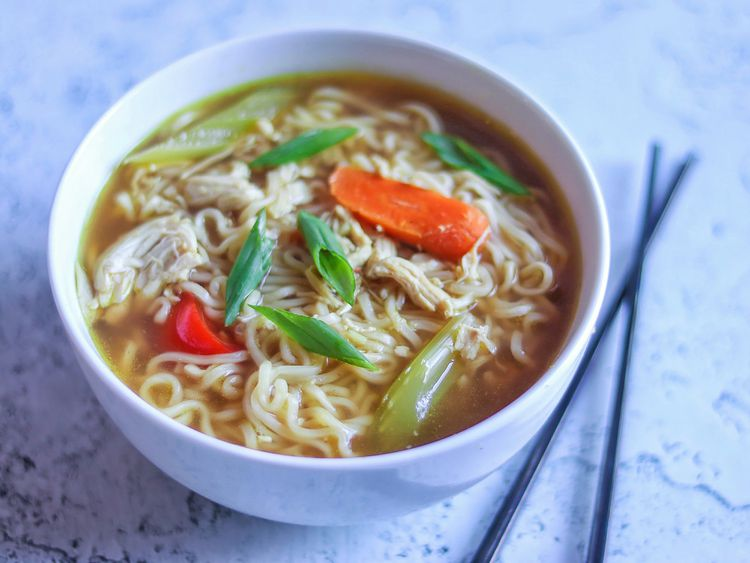

Ramen

Ramen is a popular Japanese noodle soup dish that consists of wheat noodles served in a flavorful broth.
The broth can be made from various bases, such as chicken, pork, or vegetable stock, and is often
seasoned with soy sauce or miso. Ramen is typically garnished with a variety of toppings, including sliced
meat (like pork or chicken), soft-boiled eggs, green onions, nori (seaweed), and vegetables like bok choy
or mushrooms. It's a comforting and versatile dish enjoyed by many around the world.
- Ramen noodles (fresh or dried, 2 servings)
- Chicken or vegetable broth (4 cups)
- Soy sauce (2 tablespoons)
- Miso paste (1 tablespoon, optional)
- Garlic (2 cloves, minced)
- Ginger (1-inch piece, grated)
- Green onions (2, sliced)
- Soft-boiled eggs (2, halved)
- Cooked chicken, pork, or tofu (optional, sliced)
- Nori (seaweed) (2 sheets, cut into strips)
- Mushrooms (1 cup, sliced)
- Bok choy or spinach (1 cup)
- Sesame oil (1 teaspoon)
- Chili oil or Sriracha (optional, for heat)
- Salt and pepper (to taste)
- Prepare the broth:
- In a large pot, heat the chicken or vegetable broth over medium heat.
- Add the minced garlic and grated ginger, and bring to a simmer.
- Stir in the soy sauce and miso paste (if using), and let the broth simmer for about 10 minutes.
- Cook the noodles:
- While the broth is simmering, cook the ramen noodles according to the package instructions. Drain and set aside.
- Prepare the toppings:
- Soft-boil the eggs by boiling them for about 6-7 minutes, then transferring them to an ice bath to cool. Peel and halve them.
- Slice the cooked chicken, pork, or tofu (if using).
- Slice the mushrooms and green onions.
- If using bok choy or spinach, blanch them briefly in boiling water until tender.
- Assemble the ramen:
- Divide the cooked noodles into bowls.
- Pour the hot broth over the noodles.
- Arrange the toppings (soft-boiled eggs, sliced meat or tofu, mushrooms, bok choy or spinach, green onions, and nori) on top of the noodles.
- Finish and serve:
- Drizzle a bit of sesame oil and chili oil or Sriracha (if you like heat) over the top.
- Season with salt and pepper to taste.
- Serve immediately and enjoy your homemade ramen!
Go Back